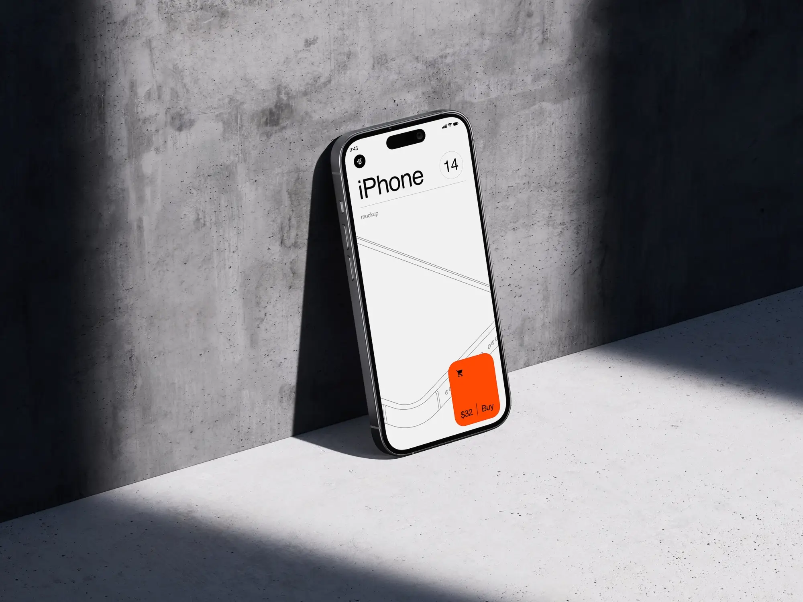

case study · 3 min read
Social Dining App Design
Connecting people through culinary discovery, group table reservations, and shared food community experiences.

Product context
Bringing shared dining experiences back to local communities
Dining out has increasingly become transactional. This concept was designed to bridge solo food enthusiasts, local chefs, and foodies eager to meet over curated multi-course group dinners and supper clubs.
Preliminary research
Coordination was the real friction
Through user research and competitive benchmarking with reservation apps, the biggest friction point was coordination:
- Split billing
- Dietary restrictions
- Attendance confirmation
Design solutions
Smart table grouping & transparent bill splitting
- Topic & Taste Grouping: Filter dining tables by cuisine preferences or interest circles.
- Automated Split-Bill Flow: Pre-paid fixed course bookings that eliminate awkward bill disputes at the end of the meal.
- Host Chef Portals: Clear dashboard for independent chefs and intimate restaurants to manage capacity and menus.